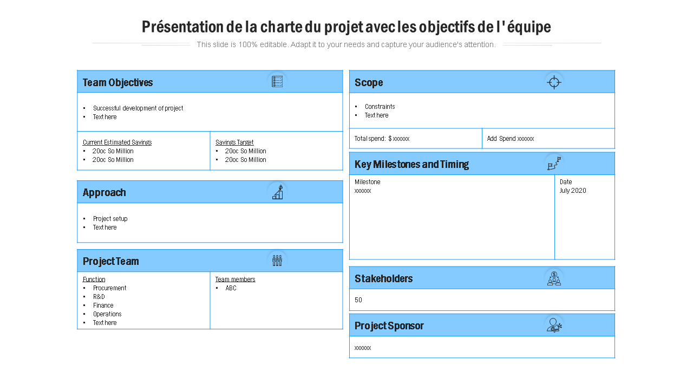
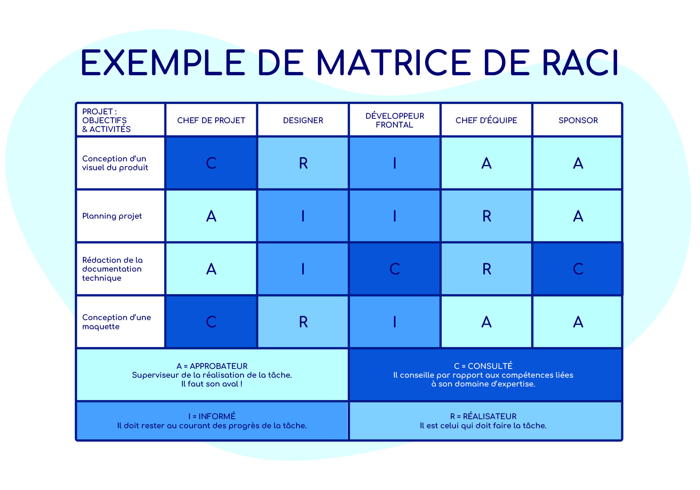
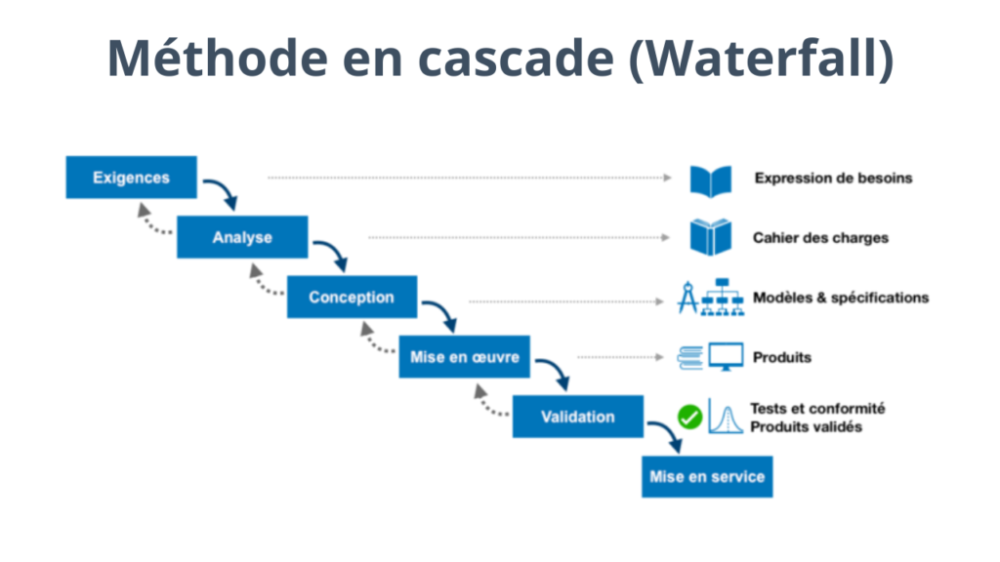
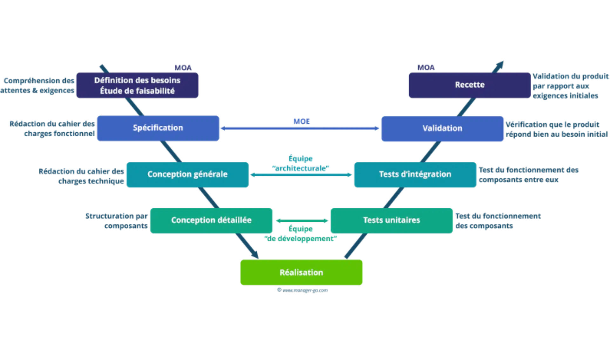
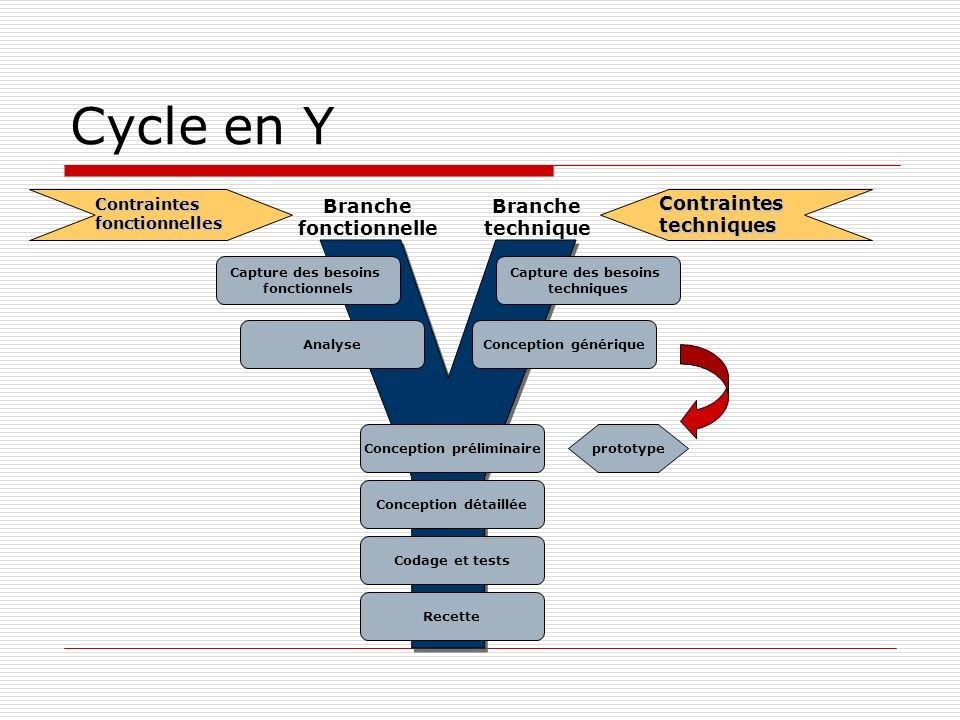
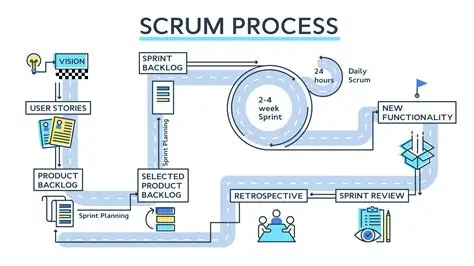
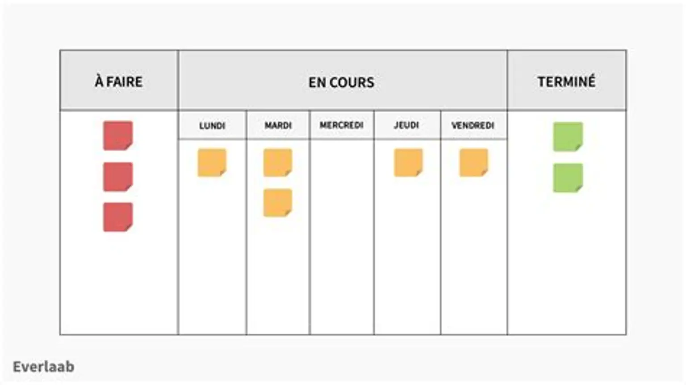
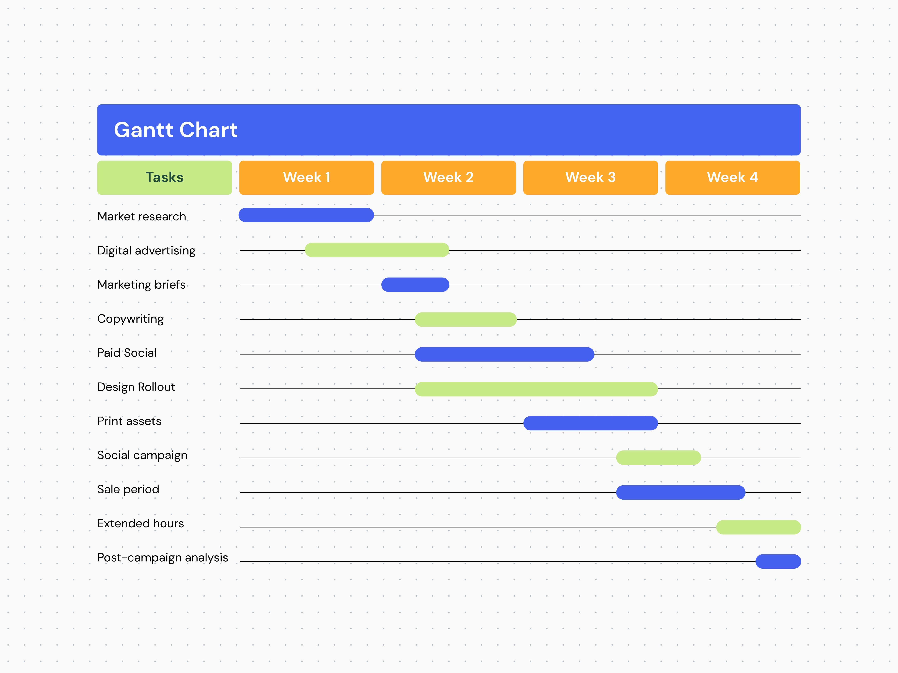
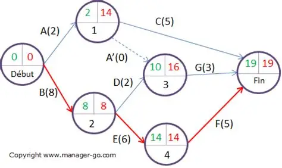

Projet
Un projet est un ensemble d'activités organisées et ordonnées afin d'atteindre un objectif précis et de produire un résultat déterminé, avec des ressources et dans un délai défini.
La gestion de projets
La gestion de projet consiste à planifier, organiser et contrôler les ressources pour atteindre des objectifs précis, en respectant les délais, le budget et le périmètre défini.
Les ressources
Les ressources d'un projet sont les éléments humains, matériels et financiers nécessaires pour réaliser les tâches et atteindre les objectifs du projet.

Livrable
Un livrable de projet désigne un résultat attendu, tangible et mesurable, produit dans le cadre d'un projet.
Charte de projet
Une charte de projet est un document officiel qui officialise l'existence d'un projet et définit ses objectifs, sa portée et ses parties prenantes.

Les parties prenantes
Les parties prenantes d'un projet sont toutes les personnes, groupes ou organisations qui peuvent influencer le projet ou être influencés par lui, positivement ou négativement.
Les principaux rôles d'un projet
👤 Chef de projet : organise et suit l'avancement du projet.
👥 Équipe de réalisation : effectue les tâches et produit les livrables.
🤝 Parties prenantes : participent au projet ou sont concernées par ses résultats.
La matrice RACI
La matrice RACI (Responsible, Accountable, Consulted, Informed) est un outil de management permettant d'assigner clairement les responsabilités pour chaque tâche d'un projet.

Caractéristiques de base d'un projet
🎯 Objectif : le résultat à atteindre.
📦 Livrable : le résultat à fournir.
⏱ Durée : le temps nécessaire.
⚙ Activités : les tâches à réaliser.
💰 Ressources : les moyens nécessaires.
Les contraintes
💰 Coût / Budget : les limites financières.
📦 Livrable / Qualité / Périmètre : ce qui doit être réalisé et son niveau de qualité.
⏱ Durée / Délai : le temps disponible pour terminer le projet.
Les étapes pour réaliser un projet
1️⃣ Analyser les besoins.
2️⃣ Concevoir la solution.
3️⃣ Exécuter et réaliser le projet.
4️⃣ Tester le résultat.
5️⃣ Déployer et livrer le produit.
6️⃣ Assurer la maintenance.
L'analyse des besoins
L'analyse des besoins est un processus structuré visant à identifier, comprendre et formaliser les attentes des parties prenantes pour les transformer en exigences exploitables et mesurables.
Types des besoins
Besoin explicite : exprimé directement par le client.
Besoin implicite : non exprimé directement, mais attendu ou nécessaire.
Cahier des charges
Un cahier des charges est un document qui formalise les besoins, objectifs, contraintes et livrables d'un projet afin d'assurer une compréhension commune entre toutes les parties prenantes.
Périmètre d'un projet
Le périmètre d'un projet est l'ensemble des objectifs, livrables, tâches et limites qui définissent précisément ce qui sera réalisé et ce qui ne le sera pas.
Le contexte de projet
Le contexte d'un projet correspond à l'ensemble des informations qui caractérisent le projet, notamment son environnement, ses besoins, ses objectifs et ses contraintes.
Méthodes de gestion d'un projet
Prévisible : méthodes classiques comme Cascade, V et Y.
Non prévisible : méthodes agiles comme Scrum et Kanban, qui facilitent l'adaptation aux changements.
La méthode Cascade
La méthode Cascade est une approche séquentielle de gestion de projet où chaque phase doit être terminée avant de passer à la suivante.

La méthode V
La méthode V est un modèle de gestion de projet séquentiel où chaque phase de conception est associée à une phase de vérification ou de validation correspondante, formant un schéma en V.

La méthode Y
La méthode Y est une méthode de conception qui part d'une base commune puis sépare le projet en branches selon les solutions à réaliser, avant leur intégration.

Art de vente
L'art de vente désigne l'ensemble des techniques et des compétences nécessaires pour convaincre les clients d'acheter.
Clé de succès d'un projet
Une des clés du succès d'un projet est la bonne compréhension des besoins du client.
Marketing fondamental
Le marketing fondamental désigne l'ensemble des principes et pratiques visant à comprendre les besoins des consommateurs, à concevoir une offre adaptée et à satisfaire les clients.
Marketing digital
Le marketing digital désigne toutes les techniques utilisées en ligne pour promouvoir une marque, un produit ou un service.
Agilité
L'agilité est la capacité à s'adapter rapidement aux changements et à améliorer progressivement le travail.
Scrum
Scrum est un framework de gestion de projet agile qui aide les équipes à organiser et superviser leur travail à travers des valeurs, des principes et des pratiques.

Kanban
Kanban est une méthode de gestion des flux de travail qui permet de visualiser les tâches, de maximiser l'efficacité et d'atteindre l'amélioration continue.

Programmation extrême (XP)
Extreme Programming (XP) est une méthodologie de développement de logiciels qui met l'accent sur la collaboration, l'adaptabilité et la fourniture de logiciels de haute qualité.
Le risque
Un risque est un événement incertain qui peut avoir un impact positif ou négatif sur le projet, notamment en termes de budget, de délai, de qualité et de périmètre.
Types de risques
Risques techniques : problèmes liés à la technologie.
Risques financiers : dépassement du budget.
Risques liés au délai : retards dans la réalisation.
Risques humains et organisationnels : problèmes d'équipe ou de communication.
Risques de sécurité : menaces sur les données et les systèmes.
Risques juridiques et réglementaires : non-respect des lois et obligations.
Risques techniques
Problèmes liés à la technologie, aux logiciels ou à l'infrastructure utilisée dans le projet.
Risques financiers
Dépassement du budget ou augmentation imprévue des coûts du projet.
Risques liés au délai
Événements pouvant provoquer un retard dans la réalisation du projet.
Risques humains et organisationnels
Difficultés liées aux membres de l'équipe, à la communication ou à l'organisation du travail.
Risques de sécurité
Menaces qui peuvent compromettre la confidentialité, l'intégrité et la disponibilité des données.
Risques juridiques et réglementaires
Non-respect des lois, des contrats ou des obligations réglementaires applicables au projet.
Diagramme de Gantt
Un diagramme de Gantt est un outil de gestion de projet qui visualise les tâches d'un projet sur une chronologie à l'aide de barres horizontales représentant leur durée et leur avancement.

Diagramme de PERT
Un diagramme de PERT est un outil visuel de planification de projet utilisé pour planifier, organiser et coordonner les tâches d'un projet.
